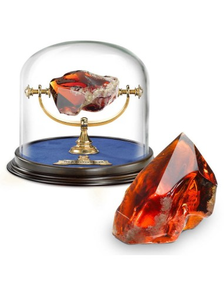
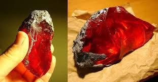

Piedra Filosofal
Bienvenidos a Aprendiendo sobre la piedra filosofal.
¿Que es la piedra filosofal
La piedra fiosofal
Nicolas Flamel es el unico descubridor conocido de la piedra filosofal. Nicolas Flamer fue un Alquimisa que se dice que creo la piedra filosofal
.jpg)
La piedra filosofal!La Piedra Filosofal fue una piedra roja hecha por hombres con propiedades mágicas. Podía ser utilizada para crear el Elixir de la Vida, el cuál alarga la vida del bebedor, al igual que transforma cualquier metal en oro puro. El famoso alquimista Nicolas Flamel creó la única Piedra Filosofal conocida en existencia. La piedra filosofal es una sustancia alquímica legendaria que se dice que es capaz de convertir los metales básicos, tales como el plomo, en oro (chrysopoeia) o plata. La piedra filosofal era el símbolo central de la terminología mística de la alquimia, que simboliza la perfección en su máxima expresión, la iluminación y la felicidad celestial. .

LA LEGENDARIA PIEDRA FILOSOFAL
"Creacion de oro" SsSsS
El concepto tiene en su base una cierta lógica científica inspirada en las reacciones químicas.
A pesar de su nombre, la piedra filosofal no era necesariamente una roca, sino una sustancia de naturaleza indefinida que tendría la capacidad de transformar metales básicos en preciosos a través de un proceso llamado crisopea o argiropea (cuyo significado en griego es, respectivamente, “creación de oro” y “creación de plata”).

Dato intersente!
En varios libros o peliculas se habla sobre ella como en Harry Potter.
Otros datos interestantes.
-
Otra leyenda de la Piedra filosofal
Otra leyenda de la piedra filosofal dice que la persona que la posee puede transmutar todo tipo de objetos en oro, pero su uso constante hace que poco a poco la persona que la use vaya, casi sin advertirlo, convirtiéndose en oro. Esto seria un castigo al abuso de los poderes de la piedra, y a la codicia de la persona... -

Otro mito o leyenda sobre la piedra filosofal
Que era un compuesto capaz de curar las enfermedades, otorgar una juventud eterna y la inmortalidad. -
.jpg) Fechas
Fechas
La alquimia lleva tres siglos tras este prodigio. -
¿Porque los alquimistas no se dan a conocer?
La razón fundamental es el juramento de secreto que les vincula a su obra. Modestia y discreción son un contrapunto indispensable que, según ellos, el practicante ha de oponer a la ambición de encontrar la ‘piedra filosofal’.
Tags
Alquimia Nicolas Flamel poderes curativos Vida terna Argiropea Perfecion Metodologia Creaccion de oro Iluminacion celestial Leyenda Paranormal Sustancia "Creacion de oro" Harry Potter
Inspiration

Follow Me
Subscribe
Suscribete para mas conocimientos.